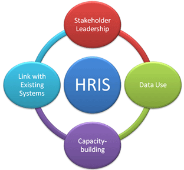
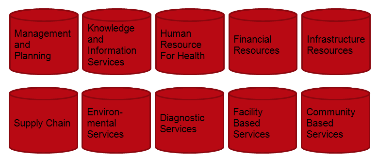
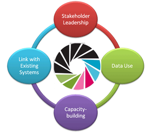

Introduction to HRIS
iHRIS Administrator - Level I, © IntraHealth International, CC BY 4.0. Originally offered at hrhresourcecenter.org/elearning (CapacityPlus). Licence stated by its author, the folio owner, 2026-10-09.
1. What is a Human Resources Information System?
A human resources information system (HRIS) is used to collect, manage and analyze data about the people in the workforce.
An HRIS can be used to track information such as:
- employment, salary, and education history
- open positions and job applicants
- license and registration information.
[audio Slide_1_final.mp3, not published] Listen to the introduction or access the transcript in the box to the right.
2. Routine HRIS
A routine HRIS is one that is designed to be used on a daily basis, which:
- increases the value, quality, and ownership of data
- better answers HR policy and management questions
- ensures high quality data
- turns data into information
[audio Slide_2_final.mp3, not published] Listen to the introduction or access the transcript in the box to the right.
3. High Quality Health Worker Data
Quality human resources for health (HRH) data can be used for:
- education and training—making sound decisions about education and training priorities, policies, etc.
- registration—ensuring a qualified supply of health workers
- deployment—meeting health system needs
- management—tracking movement of personnel
- planning
[audio Slide_3_final.mp3, not published] Listen to the introduction or access the transcript in the box to the right.
4. Strategy for Routine HRIS

A routine HRIS should:
- be part of broader health information systems strengthening
- emphasize capacity-building
- adaptability in-country
- money in the right place
- have maximum interoperability now and in the future
- ensure maximum usability
- simple, familiar interface
- clear online and paper documentation
- disciplined usability testing
[audio Slide_4_final.mp3, not published] Listen to the introduction or access the transcript in the box to the right.
5. Ten Health Information System Domains from Health Metrics Network (HMN)
HRH is one of the ten domains of a national health information aystem.
An HRIS should be interoperable with other domains.
[audio Slide_5_final.mp3, not published] Listen to the introduction or access the transcript in the box to the right.

6. Examples of Open Source Routine HRIS
- OrangeHRM
- iHRIS (a product of the USAID-funded CapacityPlus project)
[audio Slide_6_final.mp3, not published] Listen to the introduction or access the transcript in the box to the right.
7. iHRIS as a Routine HRIS

CapacityPlus’s routine HRIS software (iHRIS) characteristics:
- free/open source software
- adaptable to in-country needs
- international development and support community
- development for one country or application made available to all
- available in English, French, Italian, Portuguese, Swahili
- web-based
- maximum utility, access and compatibility
- familiar interface
- LAMP environment
[audio Slide_7_final.mp3, not published] Listen to the introduction or access the transcript in the box to the right.
8. The iHRIS Suite
- iHRIS Manage—human resources management system
- iHRIS Qualify—training, certification and licensure tracking database
- iHRIS Plan—workforce planning and modeling software
[audio Slide_8_final.mp3, not published] Listen to the introduction or access the transcript in the box to the right.
9. iHRIS Links
Mailing List http://lists.intrahealth.org/mailman/listinfo/ihris-announce
Source Code Host http://launchpad.net/ihris-suite
Wiki http://open.intrahealth.org
Blog http://capacityproject.org/hris/blog
To-Do List http://open.intrahealth.org/wiki/iHRIS_Ideas_List
[audio Slide_9_final.mp3, not published] Listen to the introduction or access the transcript in the box to the right.
Source
Lesson in Section 1 of iHRIS Administrator - Level I, Moodle course module cm-40; library/ihris-admin-course/modules/cm-40.md.